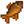
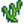
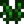

Seaweed
| Seaweed | |||||
| It can be used in cooking. | |||||
| Information | |||||
| Source |
|
||||
| Season | All | ||||
| XP |
|
||||
| Energy / Health |
|
||||
| Sell Price | |||||
Seaweed is an item that can be caught using a Fishing Pole in the ocean or the Beach farm during all seasons, including a 41% chance to catch Seaweed while fishing in the deep-sea submarine ride at the Night Market. It is never caught in Crab Pots.
It can also be foraged from a narrow strip of shore by the Tide Pools, i.e., to the east of the wooden footbridge[1], but it spawns relatively infrequently (3% chance per night). It can also be foraged on the Beach Farm Map. The saltwater crab pot fish (Clam, Cockle, Crab, Lobster, Mussel, Oyster, and Shrimp) may produce 1-3 Seaweed in a Fish Pond when the population of the pond is at least 1. It's also possible to find Seaweed in the "Dangerous Mines" on floors 1-29 when the Shrine of Challenge is turned on. Seaweed can also randomly be found in Garbage Cans.
Catching Seaweed with a Fishing Pole always gives 3 Fishing XP, and picking up from the beach gives 7 Foraging XP. Seaweed, either fished or foraged, is always normal quality.
Seaweed is displayed in the Fish section of the collection tab, and counts towards the four fishing Achievements.[2] However, it is otherwise not considered to be a fish, and therefore cannot be sold to Willy at the Fish Shop, does not benefit from fish price bonuses, cannot be used in place of "Any Fish" in recipes, and cannot be put in a Bait Maker, Fish Smoker, or Fish Pond.
One Seaweed can be placed in any Fish Tank as decoration, including the Community Center's fish tank after the fish tank bundle is completed. Its appearance in player-placed fish tanks can be changed by picking up and re-placing the fish tank.
Map
Seaweed can be found in the ocean and on the beach.

Gifting
| Villager Reactions
| |
|---|---|
| Dislike | |
| Hate | |
Bundles
Seaweed is not used in any bundles.
Recipes
| Image | Name | Description | Ingredients | Energy / Health | Recipe Source(s) | Sell Price | |||
|---|---|---|---|---|---|---|---|---|---|
| Maki Roll | Fish and rice wrapped in seaweed. |  Any Fish (1) |
Stardrop Saloon for |
Buildings
| Image | Name | Description | Cost | Size |
|---|---|---|---|---|
| Fish Pond | Raise fish and harvest their produce. Fish multiply over time. |  Green Algae (5) |
5x5 |
Tailoring
Seaweed is used in the spool of the Sewing Machine to create the 
Quests
- Seaweed may be randomly requested during any season at the "Help Wanted" board outside Pierre's General Store for a reward of
 60g and 150 Friendship points.
60g and 150 Friendship points. - 1-2 Seaweed may be requested by several ocean fish in a Fish Pond quest to increase the capacity of the pond from 3 to 5.
References
- ↑ See Beach::DayUpdate in the game code. The spawn position starts at point (66,24) on the beach map.
- ↑ In the game data (Data/Objects.xnb) the type assigned to Seaweed is "Fish", but it is not assigned the Fish category (-4). The label displayed in-game and most uses are controlled by the category.
History
- 1.3.27: Added chance to catch during Night Market.
- 1.4: Added as forage to the beach. Added as Fish Pond build material. Can now be used in Tailoring. Can be requested in Fish Pond quests. Can be produced by Fish Ponds.
- 1.5: Can now be used as decoration in Fish Tanks. Added Shrine of Challenge to sources.
- 1.6: Can now be used as decoration in Community Center's now-functional fish tank. Foraged Seaweed will now always be normal quality.
| Foraging | |
|---|---|
| Basic | Sap |
| Spring | Common Mushroom • Daffodil • Dandelion • Leek • Morel • Salmonberry • Spring Onion • Wild Horseradish |
| Summer | Fiddlehead Fern • Grape • Red Mushroom • Spice Berry • Sweet Pea |
| Fall | Blackberry • Chanterelle • Common Mushroom • Hazelnut • Wild Plum |
| Winter | Crocus • Crystal Fruit • Holly • Snow Yam • Winter Root |
| The Beach | Clam • Cockle • Coral • Mussel • Nautilus Shell • Oyster • Rainbow Shell • Sea Urchin • Seaweed |
| The Mines | Cave Carrot • Purple Mushroom • Red Mushroom |
| The Desert | Cactus Fruit • Coconut |
| Skull Cavern | Dinosaur Egg • Fiddlehead Fern |
| Ginger Island | Ginger • Magma Cap |